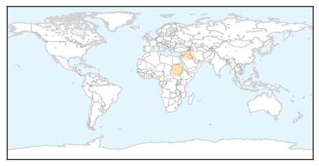

Cholera
30-Day Web Trend
30-Day Twitter Trend
Article Locations
Article Confidences

Top Articles:
Top Tweets:
-
No tweets found for Jul 23, 2015
Ebola
30-Day Web Trend
3 alerts, 0 warnings

30-Day Twitter Trend
2 alerts, 0 warnings

Article Locations


Article Confidences

Top Articles:
- 1.000
- Ebola outbreak: Guinea health team killed
- 1.000
- Liberia vows prosecution for hiding Ebola patients
- 1.000
- Ghanaian doctor recounts traumatic experience with Ebola in Liberia
- 0.999
- Government relaxes airport Ebola screening as virus oubreak eases in West Africa
- 0.999
- Ebola cases not slowing in Guinea, Sierra Leone
- 0.998
- Health specialists call for $2 billion global fund for vaccines
- 0.996
- PHE adjusts screening measures as risk posed by Ebola epidemic declines
- 0.987
- Liberia Ends Ebola- Again
- 0.979
- Equatorial Guinea Hosts International Conference On Africa's Fight Against Ebola
- 0.978
- Out of the news but still hitting Africa
- 0.973
- Nigeria donates N230million to fight Ebola
- 0.970
- Antiviral compound protects nonhuman primates against Marburg virus
- 0.968
- Experts propose $2 billion global vaccine fund
- 0.962
- The Liberian Observer
- 0.960
- Look to outer space for help in fighting health threats
- 0.957
- Health worker receives hazard payment- Narrates Ebola story - Liberia
- 0.951
- Equatorial Guinea to provide $3 million toward Ebola fight
- 0.949
- Doctor Suggests That Marijuana Can Protect You From Ebola
- 0.916
- Africa Information
- 0.893
- Are illegal immigrants bringing ‘tremendous’ disease across the border, as Trump says? Unlikely
- 0.877
- Public opinion — a game changer for health systems financing?
- 0.855
- Nigeria’s Polio Eradication Campaign Helped Prevent Ebola Epidemic
- 0.809
- Africa strong when united: Mugabe
- 0.807
- Africa is stronger when united: President
- 0.725
- Fort Worth company that fights Ebola expands to Africa
- 0.663
- Sierra Leone's anti Ebola chief fears prevalence of unsafe burials
- 0.641
- "The UK’s commitment to addressing the Ebola crisis is
- 0.597
- Egypt to aid African countries in fight against Ebola
- 0.567
- Golden Agri Resources : Palm oil company accused of exploiting Ebola crisis to take land
- 0.536
- Egypt, Mauritania to strengthen ties
- 0.511
- The most from the coast
Top Tweets:
- 0.955
- Ebola Update: 27706 confirmed probable & suspected cases reported in 3 most affected countries with 11269 deaths. EbolaResponse
- 0.799
- Drug Might Fight Ebola-like Marburg Virus - US News - U.S. News & World Report http://t.co/t9xbsVaJy5 ebola EVD
- 0.774
- Ebola's Not Done With West Africa | WIRED - Wired http://t.co/c6mUu43TdE ebola EVD
- 0.681
- Together we can defeat Ebola @dannymusic for supporting the fight to kick Ebola out of Africa @eNCA https://t.co/L7244xHhoA
- 0.654
- Ebola update. 26 new cases (22 GN 4 SL). Total: 27705 cases with 11269 deaths in the most affected countries http://t.co/YvYBYLeA1V
- 0.638
- RT: On the RoadtoZero CDC staff reached remote parts of West Africa to help control the spread of Ebola. http://t.co/INVl2qQQnE
- 0.616
- Bitcoin: How Barclays might make the 'Ebola' of banking palatable - Campaign - CampaignLive http://t.co/ouQNlNmSCv ebola EVD
- 0.542
- Plucky Arundel pupils' profits to help Ebola victims - Littlehampton Gazette - Littlehampton Gazette http://t.co/yQaHcA1nqq ebola EVD
- 0.503
- e-bola movie. The first educational movie made for the medical community about the ebola virus http://t.co/xetMm1Z1Kl